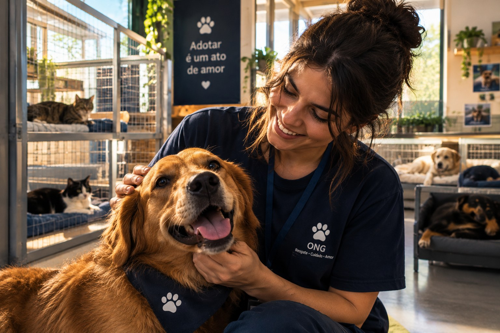
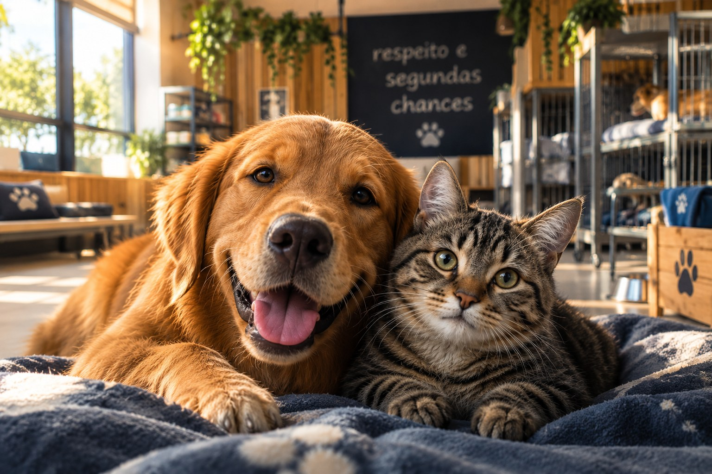

O cenário
Milhões de animais aguardam um lar no Brasil, enquanto ONGs divulgam seus pets de forma dispersa em redes sociais e sites isolados.
Não somos um abrigo físico, mas sim a ponte inteligente que une você à ONG certa, centralizando abrigos de todo o Brasil em um só lugar.
Milhões de animais aguardam um lar no Brasil, enquanto ONGs divulgam seus pets de forma dispersa em redes sociais e sites isolados.
Quem quer adotar precisa procurar em dezenas de lugares, sem filtros, sem padrão de informação e sem saber em quem confiar.
Por espécie, perfil e localização.
Filtros inteligentes encontram o pet ideal.
Banco unificado das ONGs parceiras.
Contato oficial com total segurança.
A tecnologia nasceu como ponte — e cada conexão começou com uma história real.


A história do Adote Amigo não começou em uma sala de reuniões corporativa, mas sim na angústia silenciosa de quem observa de perto a realidade dos abrigos e protetores independentes no Brasil. Quem já tentou adotar um pet ou ajudar uma causa animal sabe o tamanho do labirinto: dezenas de páginas espalhadas pela internet, redes sociais desatualizadas, formulários perdidos e a sensação constante de que o animal que precisava de um lar estava invisível aos olhos de quem podia amá-lo.
Percebemos que o problema nunca foi a falta de amor — o Brasil transborda pessoas dispostas a adotar e protetores incansáveis.
O verdadeiro gargalo era a fragmentação. Foi aí que nos unimos com um propósito claro: usar a tecnologia não como um fim, mas como uma ponte de empatia.
“E se o adotante não precisar mais pular de aba em aba? E se pudermos centralizar o amor em um só lugar?”
Não somos um abrigo físico; somos a infraestrutura invisível que dá voz e alcance a quem cuida na ponta. Cada linha de código que escrevemos, cada filtro que desenhamos e cada banco de dados que conectamos carrega uma missão muito clara: diminuir a distância entre a solidão de um abrigo e a alegria de um novo lar.
O abandono de animais é um problema que vai além do sofrimento de cada animal: ele também afeta a saúde pública das áreas urbanas. Animais que vivem nas ruas, sem vacinação e sem acompanhamento veterinário, ficam mais expostos a doenças e podem transmiti-las a outros animais e às pessoas, as chamadas zoonoses. Além disso, estão sujeitos a maus-tratos.
Foi pensando nisso que o Adote Amigo foi criado. Ao facilitar o encontro entre quem deseja adotar e as ONGs que cuidam desses animais, buscamos aumentar o número de adoções responsáveis e, com isso, reduzir o abandono e a quantidade de animais vivendo nas ruas. Com esse objetivo, esperamos contribuir para:
Entendemos a adoção responsável como uma ação que beneficia o animal, a família que o recebe e toda a comunidade.
Porque acreditamos que encontrar um melhor amigo deveria ser tão simples quanto um gesto de carinho.
Os fundadores percebem que adotar era difícil não por falta de pets, mas por falta de conexão entre adotantes e abrigos.
O protótipo nasce como TCC e as primeiras ONGs aceitam centralizar seus pets em um só catálogo.
O portal chega a mais de 300 cidades, com filtros inteligentes e teste de compatibilidade.
Nossa visão: tornar a adoção responsável acessível, simples e digital em todo o Brasil.
Informações claras sobre cada pet e cada ONG parceira.
ONGs verificadas e contato sempre pelos canais oficiais.
Cada decisão do portal começa pelo bem-estar dos pets.
Usamos dados e filtros para acelerar adoções responsáveis.
Não. O Adote Amigo é um portal centralizador: reunimos pets de ONGs e abrigos parceiros de todo o Brasil em um só lugar. Os animais permanecem sob os cuidados das instituições.
ONGs e abrigos legalizados solicitam o credenciamento pela nossa página de parceiros. Após a verificação, passam a publicar seus pets no catálogo unificado.
Você encontra o pet e envia seu interesse pelo portal, mas a avaliação e a adoção são feitas diretamente com a ONG responsável.
Não. O Adote Amigo é gratuito para adotantes. Algumas ONGs podem cobrar uma taxa simbólica, revertida integralmente para os cuidados dos animais.
Explore pets de ONGs de todo o Brasil e dê o primeiro passo hoje.
Encontrar meu novo amigo